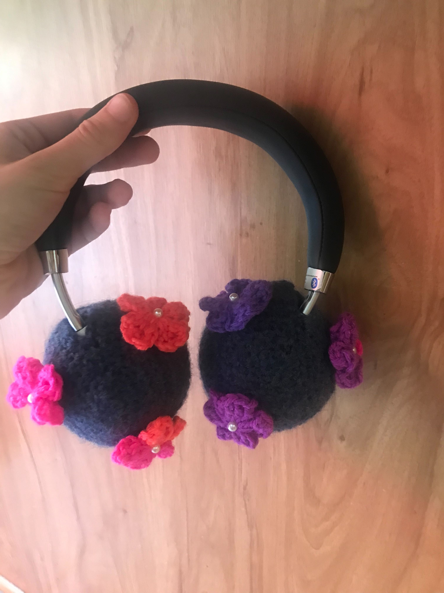

This cover should fit just about every headphone. This pattern is only for
the cover not the decorations on it.

Materials: 1 Yarn color: main color, Small Button, Crochet Hook, Skissors, Lardge Sewing Needle.
Notes: These covers are very easy to decorate, I have made the flower
ones, some frogy ones, and even some happy face ones. You will also want
to use small buttons, so before sewing them on make sure they will fit
through the DC STs.
Please do not copy this pattern, sell this pattern, or call it your own. You can make it yourself and sell it
or reference the website. If you have any questions, please feel free to contact me.